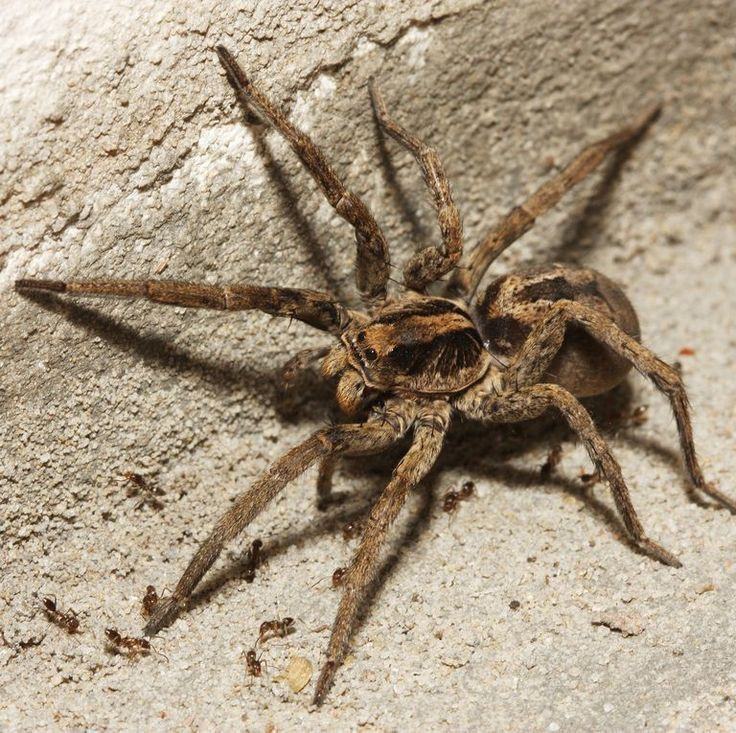
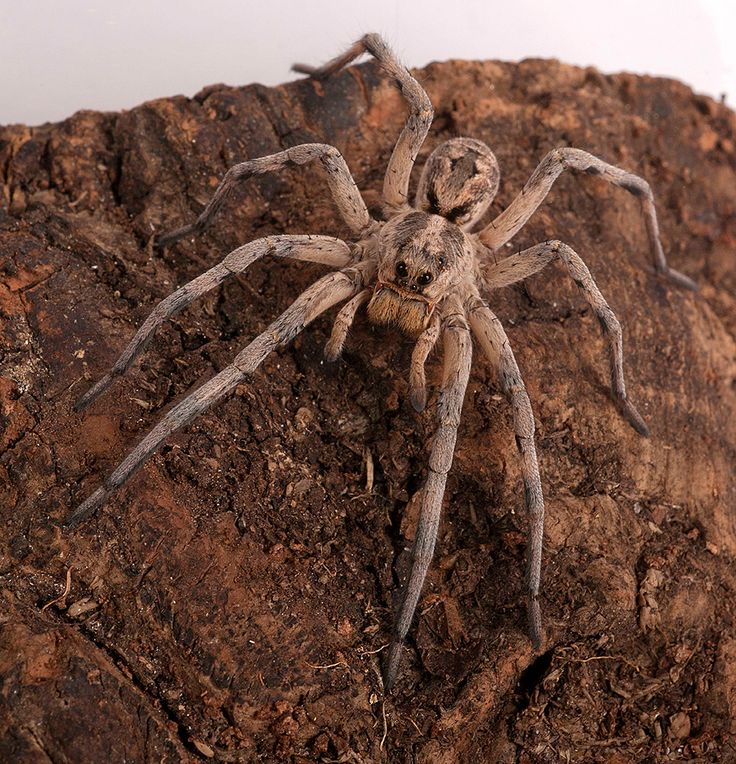
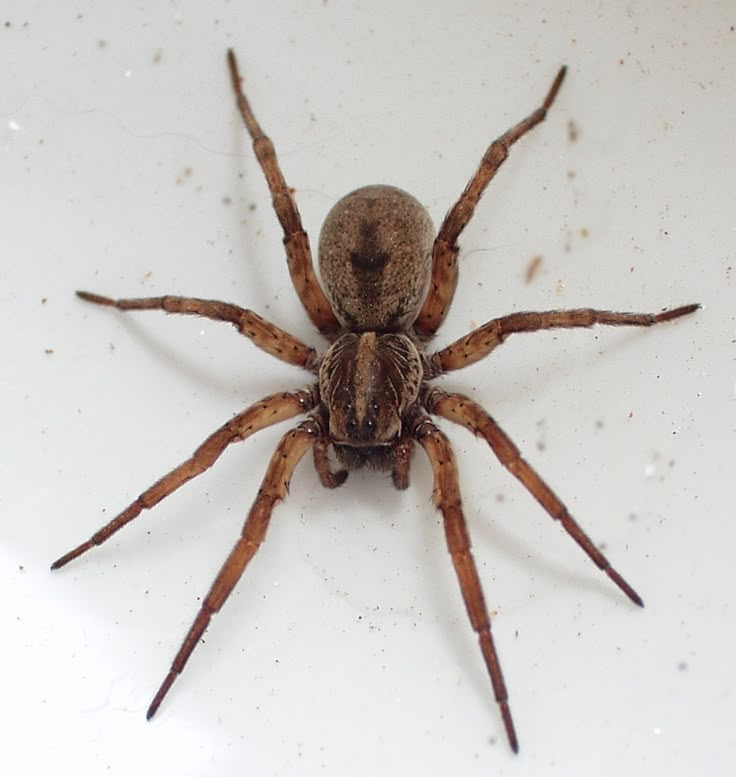
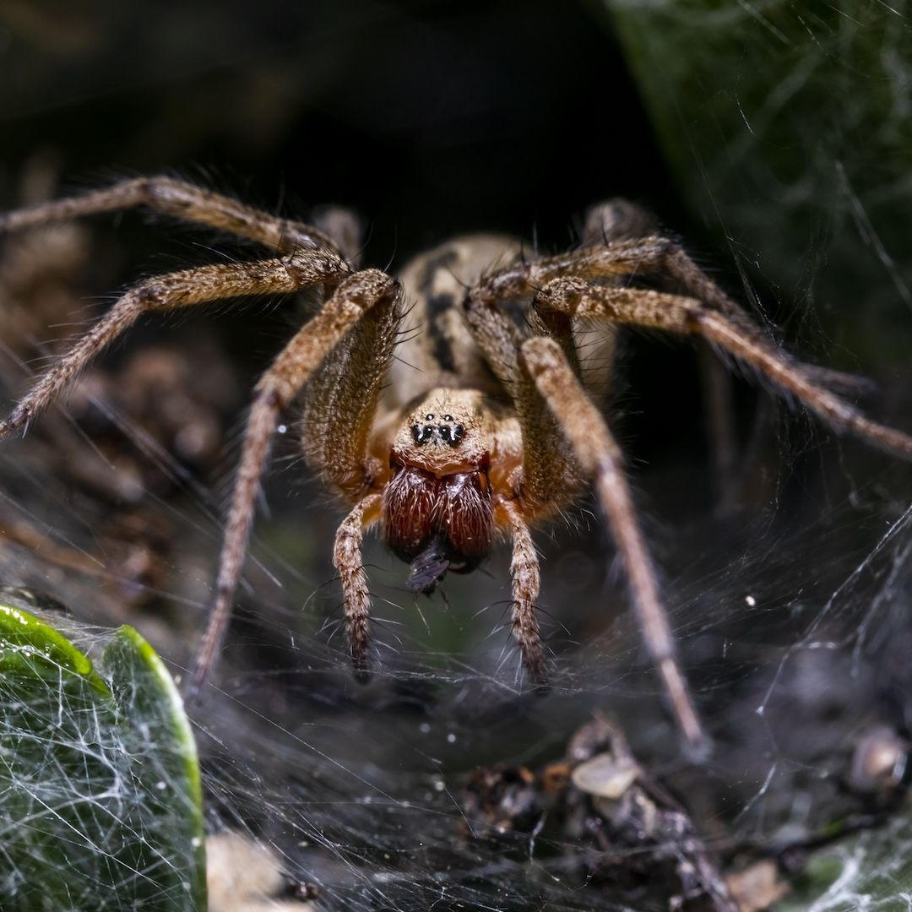
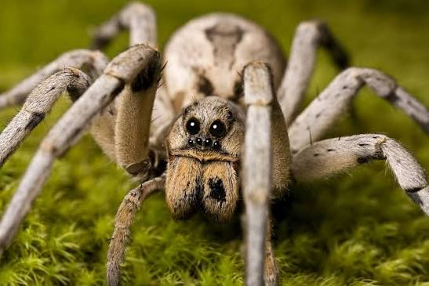
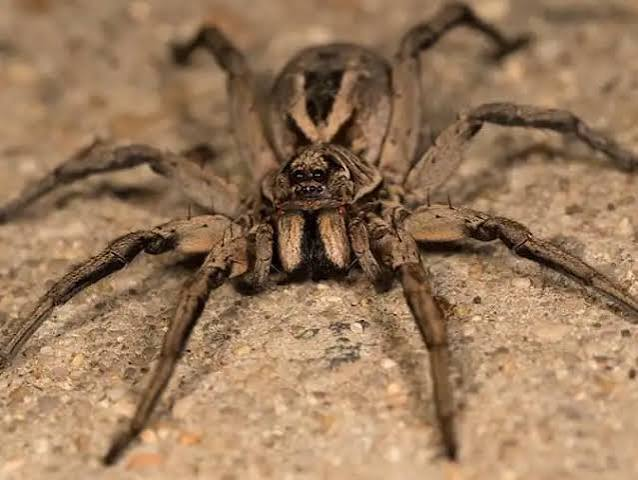
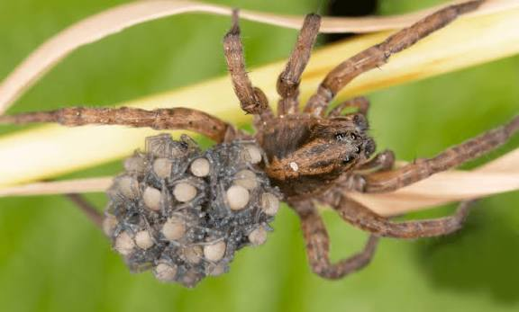
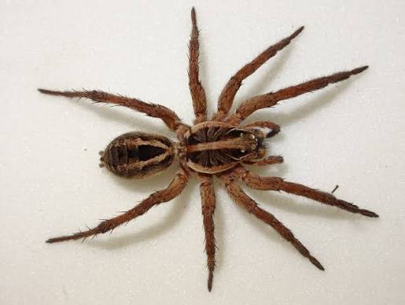
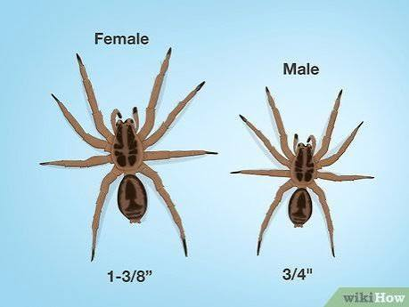

Again, I find them really interesting, I really like how they look, and I really enjoy learning new information about them.
Learning about spiders is currently one of my favorite things to do, I find it fun, and I like how each and every one has a different unique ability or looks to them.



Wolf spiders can have many different forms, there are over 2,400 wolf spider species. Wolf spiders don't spin their webs to catch prey, instead the spider tends to catch their prey from the ground. They hunt the prey by chasing it from the ground, they typically go after insects just like most spiders do. The name "wolf spider" came from them being a hunter who goes to prey from the ground. Just like wolves do, due to the running they do to get their prey. just like any other spider, wolf spiders do NOT target humans. They will only bite if they feel provoked, even then the spider does carry venom. However, similar to the jumping spider, it does not carry venom that can be deadly. Yes, it will not put you six feet underground. Yes, it will still hurt and can cause temporary pain.
When it comes to having wolf spiders as a pet, just like the Jumping Spiders, they need to be kept in a secure area. They need to be kept in a 70-85 degree place, when it comes to water unlike the spray bottle for Jumping spiders, Wolf spiders need a shallow water dish to keep them from drowning in their own water bowl ☹️.
The name "wolf-spider" does not only come from the way they hunt, but it also comes from how large they are, the brown-ish body, and the excellent eyesight they have. Wolf spider's are typically found in grass, under stone, loegs, and even leaf litter. They can be more active at night, this can be because of many reasons such as: buidling nest, hunting better at night, or some simply just rest. When it comes to female wolf spiders and their eggs, they can feel very maternal and care for the eggs and young ones.
The eggs are contained with a gray silk sac, when the eggs hatch the little spiderlings tend to ride the mother's back. (attached to the spinnerets.) This can contuine to happen up to about days or serverl weeks, the spiderlings won't stop until they are grown / large enough to survive on their own.



So up to a few days, one week, or even two weeks, the baby wolf spiderlings can now stop being carried by their mother. About 100 (sometimes over) can ride on top of the mother wolf spider. While a mother spider can hold onto her eggs or even after they hatced, she still has the power to hunt and stalk on her preys. Just like every other female spider, the male spider most likely isn't around anymore. Considering female spiders (all female spiders) tend to kill the male spiders after reproduction.
When it comes to male spider's they can be very different from the female spiders. They're different in sizes, looks, and even the way they hunt / more. For example, female spiders will go out, hunt, and stalk their prey. Male wolf spiders tend to go out durning more warmer months, not ony for prey but to go and wonder around for female wolf spiders.
When a male wolf spider finds a female, he does a movement that some may call it a "dance", it's a small ritual involving: leg tapping, body shaking, and a palp drumming. Doing this "dance" is sending a signal to the female wolf spider that he is not prey, but rather a mate for the female wolf spider. Most male spiders do a small "dance" to send a signal to the female spiders.


